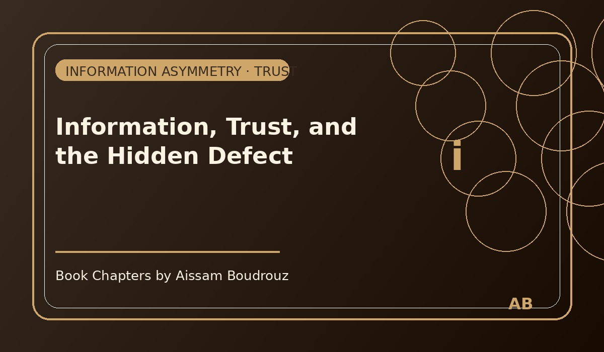

Information, Trust, and the Hidden Defect
It was just a few evenings ago. I was sitting at home, watching one of my favorite Moroccan TV programs — a show where entrepreneurs present their projects to investors. I've always liked these kinds of programs. They make me believe again in the creativity and potential of our country.
That night, one investor's idea caught my attention more than the others. It wasn't complicated or flashy — it was simple, clear, and brilliant.
And for a moment, I wondered:
"Did this person read the Nobel Prize paper from 2001 by Joseph Stiglitz, Michael Spence, and George Akerlof?"
Because without even realizing it, this entrepreneur had just solved the exact problem those three economists wrote about: the asymmetry of information.
When one side knows more
In economics, information asymmetry happens when two people in a transaction don't share the same level of knowledge. Usually, one side knows something the other doesn't — and that creates risk.
Take the classic example from Akerlof's famous paper "The Market for Lemons." It's about the used-car market.
Imagine you're buying a second-hand car. The seller knows everything about it — every scratch, every noise, every secret repair. You, the buyer, know nothing except what he tells you.
That's asymmetry.
Because of it, many buyers simply avoid the used-car market altogether. They fear being tricked — what economists call adverse selection. And when too many buyers leave, the market shrinks, and everyone loses.
A modern Moroccan solution
The entrepreneur on the show had found a brilliant way to fix this. He created a service that acts as a trust bridge between buyers and sellers of used cars. If you want to buy a car, you tell the company your preferences, and their certified technicians inspect the vehicle in detail. They check every system, every defect, every hidden problem — and then, the company itself becomes the intermediary.
You don't deal with the seller directly; you deal with the trusted third party. And most importantly, they give you something the individual seller never could: a guarantee.
It was simple but revolutionary — not in technology, but in trust.
This was exactly what Akerlof, Spence, and Stiglitz had been trying to explain for decades: that markets don't fail because people are bad — they fail because information isn't equal.
Once you fix the flow of information, you fix the market.
When economics meets creativity
Watching that episode, I realized something I've always believed: sometimes the smartest economic solutions don't come from big governments or central banks. They come from small, local minds that understand how people think and trade.
By creating transparency, this entrepreneur rebuilt confidence in a market that many people had stopped trusting.
Maybe he never read a single academic paper in his life — but he instinctively solved the same problem that earned three professors a Nobel Prize in 2001.
And honestly, that night, I didn't feel like I had just watched a TV show. I felt like I had just seen a theory come to life.
So yes, maybe I gave him free publicity in my thoughts — but some ideas deserve it. Because sometimes, economics isn't just about numbers — it's about trust, honesty, and the courage to make things clear. 🚗✨
← Back to Articles